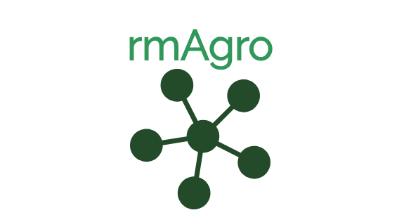

rmAgro - Domain Reference Model
The domain reference model for agricultural production.
- Date: January, 2024
- Background: This website is an explication of the domain reference model rmAgro.
- Editors: Daoud Urdu (daoud.urdu@wur.nl), Joep Tummers (joep.tummers@wur.nl)
- Sponsors:
- Het Programma Precisielandbouw (PPL)
- PPS AgroConnect
- EU research project FIspace
- Farm Digital project
- DATA_FAIR project
- NXTGEN agrifood
Downloads
Download the rmAgro Domain Reference Model:
Download PDF
Data model
View the data model in your browser